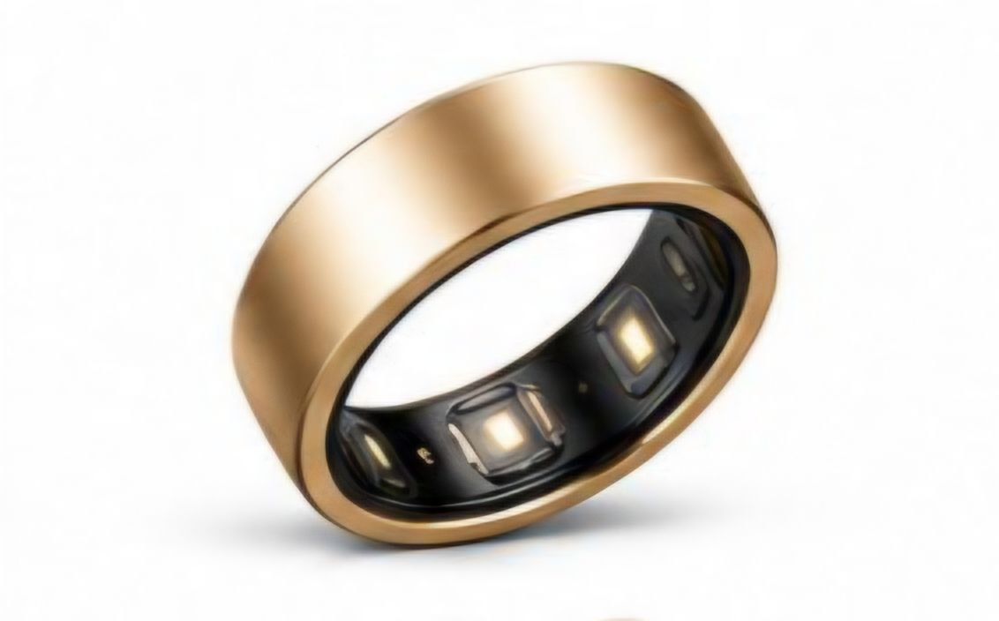

AstraRing
A minimalist smart IoT ring that looks like a premium piece of jewellery. It tracks your health quietly all day and sends the results to your phone, so it suits both casual and professional outfits.
Features: heart rate monitoring, sleep tracking, daily activity and step counting, stress monitoring, smartphone connectivity, real-time health insights.
Colours: Gold, Silver, Black.